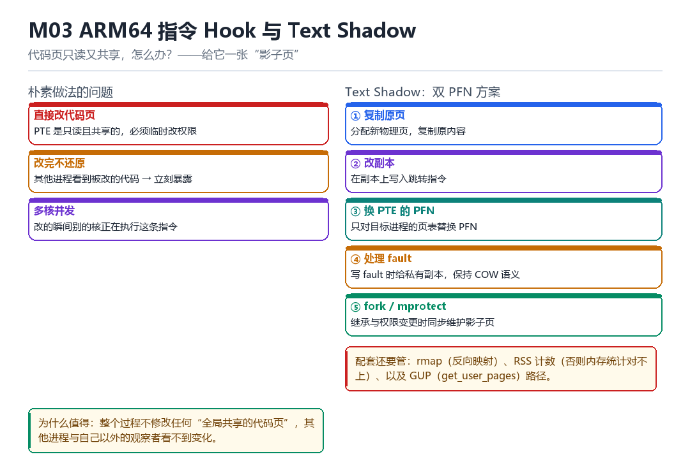

M03
ARM64 指令 Hook 与 Text Shadow
trampoline 重定位、BTI、PTE 双 PFN、fault/GUP、fork/mprotect、rmap/RSS
代码页只读又共享，怎么办？——给它一张“影子页”。
3.1 朴素做法的三个问题

| 问题 | 原因 | 后果 |
|---|---|---|
| 直接改代码页 | PTE 只读且共享 | 必须临时改权限，窗口期暴露 |
| 改完不还原 | 其他进程看到被改代码 | 立刻被抓 |
| 多核并发 | 改的瞬间别的核在跑 | 指令撕裂 / 崩溃 |
3.2 双 PFN 方案的五个步骤
- 复制原页：分配新物理页，把原内容拷过去。
- 改副本：在副本上写入跳转指令（或替换整段逻辑）。
- 换 PTE 的 PFN：只对目标进程的页表替换，其他进程不受影响。
- 处理 fault：写 fault 时给私有副本，保持 COW 语义。
- fork / mprotect：子进程继承与权限变更时，同步维护影子页。
核心动作（示意）
newp = alloc_page(GFP_KERNEL);
memcpy(page_address(newp), page_address(oldp), PAGE_SIZE);
patch_jump(page_address(newp));
set_pte_at(mm, addr, ptep, mk_pte(newp, prot));
flush_tlb_range(vma, start, end);3.3 trampoline 与 BTI
被覆盖的指令不能丢——要搬到 trampoline 里执行，再跳回来。搬的时候要处理 PC 相对寻址：如果原来那条指令用的是 ADR/ADRP，搬到新地址后算出来的目标就错了，必须重算。
ARM64 的 BTI 要求间接跳转目标的第一条指令必须是 BTI 或 PACIASP。所以 trampoline 的入口和目标函数的新入口都必须带上这个标记，否则一调就异常。
3.4 还要维护的三本账
| 账本 | 不维护的后果 |
|---|---|
| rmap | 反向映射查不到，回收/迁移时崩 |
| RSS / PSS | 内存统计对不上，被差分检测抓 |
| GUP 路径 | get_user_pages 拿到错的页，数据不一致 |
3.5 本章自测
- 为什么必须“复制页”而不是“改原页”？
- 换 PFN 之后为什么一定要 flush TLB？
- trampoline 里的 PC 相对指令要怎么处理？
- rmap、RSS、GUP 三者各自不维护会怎样？
3.6 深入：fork 时影子页怎么继承
子进程复制父进程的页表，所以默认会“继承”影子页——这通常是你想要的。但如果子进程不该被 hook（比如它是个检查进程），就要在 fork 时把它换回原页。
在 fork 路径上做判断（示意）
// 伪代码：hook copy_process 或 task_fork
if (should_not_inherit(child)) {
restore_original_pfn(child->mm, addr);
}3.7 实战：怎么验证“只改了目标进程”
- 选两个都加载了同一个库的进程。
- 在 A 进程上应用 hook。
- 分别读 A、B 两个进程的同一虚拟地址对应的物理页（pagemap）。
- PFN 不同 = 只改了 A；PFN 相同 = 改漏了（改了共享页）。
3.8 原理推演：为什么“只换 PTE”能骗过所有人
因为“进程看到什么内存”完全由它自己的页表决定。同一份代码页，A 进程的 PTE 指向页 X，B 进程指向页 Y，两者互不干扰。CPU 不会去问“别人看到的是什么”。
| 观察者 | 看到什么 | 能否发现 |
|---|---|---|
| 目标进程 | 影子页（已改） | 否 |
| 其他进程 | 原页 | 否 |
| 内核（直接读物理页） | 原页 | 能（如果它知道去读） |
最后一行是关键：如果检测方有内核能力，它可以直接读原始物理页，与“进程看到的”对比。这就是为什么“内核级对抗”是最高一档。
3.9 数据细节：一次 fault 的处理顺序
写 fault 的关键步骤
1. 判断 fault 类型（读/写/执行）
2. 找到 VMA
3. 如果是 COW：分配新页、复制、改 PTE
4. 如果是文件页：从 page cache 取
5. 刷 TLBText Shadow 要在第 3 步“插一脚”：如果是目标进程、且地址在我们的 hook 范围，就给它影子页而不是普通 COW 页。